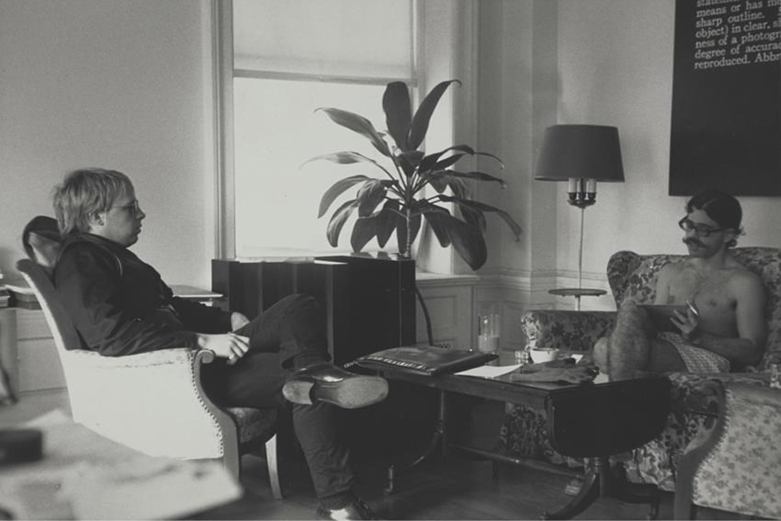

THIS WEBSITE DEALS WITH ART PUBLISHING AS POLITICAL PLATFORM
Printed Matter
Printed Matter, Inc. was founded by a loose consortium of artists, critics, and
publishers—including Sol LeWitt, Lucy Lippard, Carol Androcchio, Amy Baker
(Sandback), Edit DeAk, Mike Glier, Nancy Linn, Walter Robinson, Ingrid Sischy, Pat Steir, Mimi Wheeler, Robin White and Irena von Zahn—in 1976 as a for-profit art space in the Tribeca neighborhood of New York City. The original concept arose from Sol LeWitt's desire for artists to take over the means of production of their variously serious, unique, and oddball artist's books (alternatively known as "bookworks" or "book art"). At the time, these artist's books were viewed as inconsequential and used by dealers as free promotional materials, instead of being regarded as art
Lucy Lippard cites International General, an independent publisher of artists'
books run by artist
Seth Siegelaub,

as a model for Printed Matter Inc.
In 1976, Printed Matter's inaugural catalog of books included both established
and lesser-known artists who are signal artists of their generations, including
Kathy Acker, Laurie Anderson, Carl Andre, John Baldessari, Daniel Buren, Susan Hiller,
Adrian Piper, Ad Reinhardt, Martha Rosler, Edward Ruscha, and Lawrence Weiner.
Printed Matter is one of the first organizations dedicated to creating and
distributing artists' books, incorporating self-publishing, small press
publishing, and artist networks and collectives. Historically there was
no lack of publishers of these works, but there was a real need for
distributors; Printed Matter functions as both a distribution agency
as well as a publisher of artists' books. Printed Matter focused
heavily on the distribution of these artists' books because it could
simultaneously broaden the reach of art outside museums and allow artists
to "control their own production."
The works published by Printed Matter are editioned and are conceived
by artists as artworks. However, due to mass-producing they can be sold
at affordable prices (currently around $5-$50), as they are meant to spread
the accessibility of art.
Printed Matter also serves as a support system for avant-garde
artists as well as a place of community, often balancing its role
as publisher, exhibition space, retail space, and community center
of the downtown arts scene. Many artists rely on Printed Matter's
commitment to fostering creative output that is overlooked by commercial
art galleries and publishers. Printed Matter also holds on-site
courses and workshops for middle school, high school, and college
students interested in DIY publishing and distribution.